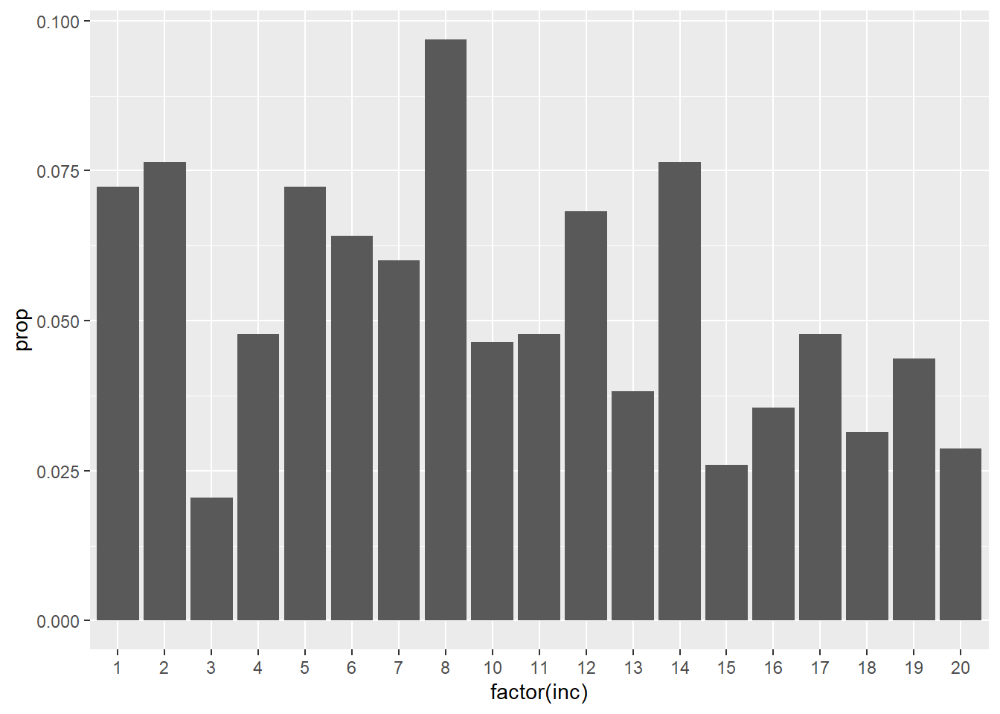
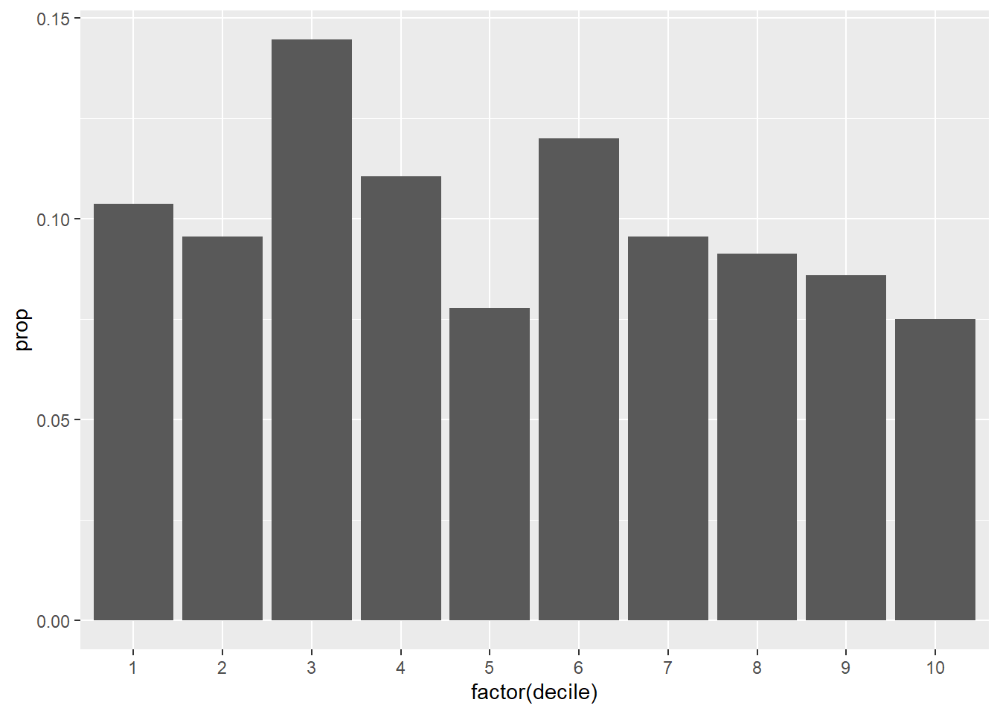
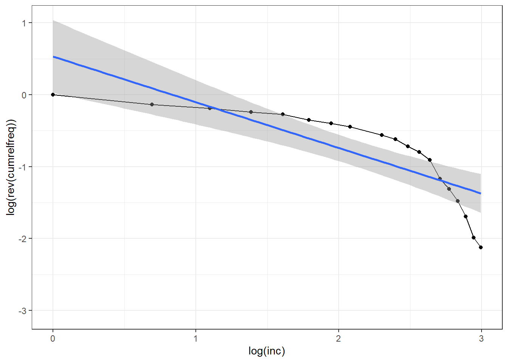

Notes on the methodology of the WPID
How far can we go with income brackets?
To build their database on World political cleavages and inequality, Piketty and his team had to use electoral survey data. One problem with these sources is that they collect income data through brackets, without reporting the overall income average of the sample or the average per bracket. This Thus poses the question of how far one can go in terms of statistical analysis with only income brackets as a source of information for income. I will here explore what can be done with such a variable as well as the technical note that Piketty et al. (2021) provides to explain how they computed the vote share for income and education decile, which they claim is one of their main contributions on political cleavages and inequality.
A first look on the WPID dataset
The wpid is based on an impressive dataset compiling electoral survey data of 500 elections since 1948. Since the technical note takes Canada’s 2015 election as an example, I will use the latter here.
ca <- read_dta("ca.dta")
ca2015 <- ca %>%
filter(year == 2015)
rm(ca)Note that there is already something weird here: in the dataset, the variable income has 20 brackets/categories here whereas it has 18 in the technical note. Since this is not so much of an issue, I will still work with this dataset and we just won’t have the same results as in Piketty & al’s example.
A first step in analyzing such a variable is to compute the frequency, relative frequency and the cumulative frequency and relative frequency:
ca2015 <- ca2015 %>%
mutate(
decile = ntile(inc, 10)
)
ca2015 %>% filter(votendp == 1) %>%
group_by(inc) %>%
count() %>%
drop_na() %>%
ungroup() %>%
mutate(prop = n/sum(n)) %>%
ggplot(aes(x = factor(inc), y = prop))+
geom_col()
ca2015 %>% filter(votendp == 1) %>%
group_by(decile) %>%
count(votendp) %>%
drop_na() %>%
ungroup() %>%
mutate(prop = n/sum(n)) -> table.income
table.income %>%
ggplot()+
aes(x = factor(decile), y = prop)+
geom_col()
ca2015 %>%
count(inc) %>%
mutate(prop = n/sum(n),
cumrelfreq = cumsum(prop)) -> paretotableparetotable %>%
ggplot()+
aes(x = log(inc), y = log(rev(cumrelfreq)))+
geom_point()+
geom_line()+
geom_smooth(method = "lm")+
theme_bw()